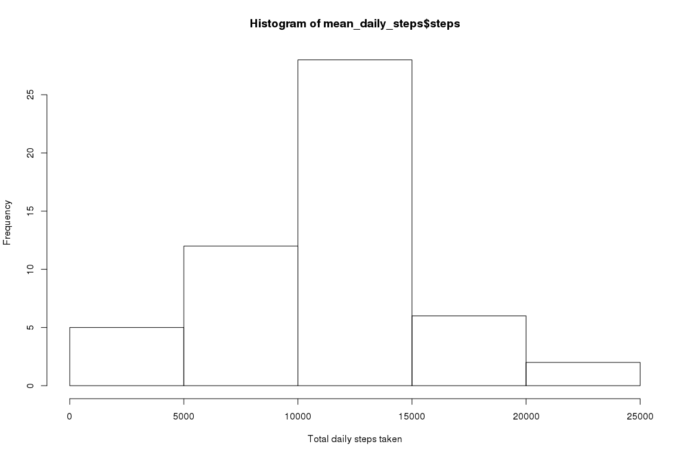
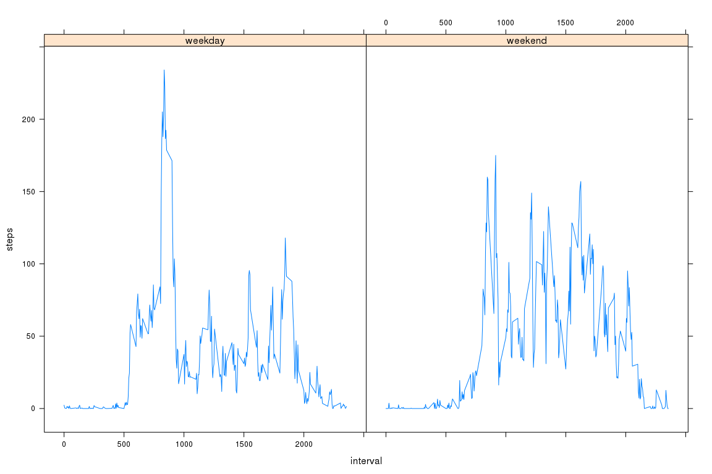

Activity Analysis
Chris Njuguna
July 21, 2016
Read in the data and convert the dates from characters to date objects
What is mean total number of steps taken per day?
#calculate the mean number of steps taken for each day
#mean_daily_steps <- tapply(X=activity$steps, INDEX = activity$date, FUN=mean, na.rm=TRUE)
mean_daily_steps <- aggregate(steps ~ date, data=activity, sum, na.rm=TRUE)A histogram of the number of steps taken each day is shown below
hist(mean_daily_steps$steps, xlab = "Total daily steps taken")
The mean number of total steps per day is 10766 while the median is 10765
What is the average daily activity pattern?
A timeseries plot of the average of the 5-minute intervals across all days
#mean_5min_intervals <- tapply(X=activity$steps, INDEX = activity$interval, FUN=mean, na.rm=TRUE)
#plot(seq(0, 1435, by = 5), mean_5min_intervals, type="l", xlab = "5 min intervals", ylab = "Mean steps")
mean_5min_intervals <- aggregate(steps ~ interval, data = activity, FUN = mean, na.rm=TRUE)
plot(steps ~ interval, data = mean_5min_intervals, type="l")
#calculate the max steps
max_mean_5min_intervals <- max(mean_5min_intervals$steps,na.rm=TRUE)
#find the index with the highest number of steps
idx_max_mean_5min_intervals <- which(mean_5min_intervals$steps == max_mean_5min_intervals)
max_intvl <- mean_5min_intervals[idx_max_mean_5min_intervals,]$interval
abline(v=max_intvl, col="red", lwd=2)
text(x=max_intvl+600,y=max_mean_5min_intervals, paste("intvl:",max_intvl, "steps:", round(max_mean_5min_intervals), sep=" "))
The 5 min interval with the highest number of steps is 835 with 206.1698113 steps.
Imputing missing values
num_NA <- sum(is.na(activity$steps))
#calculate the mean steps for each interval
mean_all_intervals <- aggregate(steps ~ interval, data=activity, FUN=mean, na.rm=TRUE)
#copy the activity dataset
activity_noNA <- activity
intervals_NA <- activity_noNA[is.na(activity_noNA$steps),"interval"]
#replace all NAs with the mean for that 5 min interval
activity_noNA[is.na(activity_noNA$steps),"steps"] <- sapply(intervals_NA, FUN = function(x) { mean_all_intervals[mean_all_intervals$interval == x, "steps"]})
#mean_5min_intervals_noNA <- tapply(X=activity_noNA$steps, INDEX = activity_noNA$interval, FUN=mean, na.rm=TRUE)
mean_5min_intervals_noNA <- aggregate(steps ~ date, data=activity_noNA, FUN=sum, na.rm=TRUE)A histogram of the number of steps taken each day with imputed data is shown below
hist(mean_5min_intervals_noNA$steps, xlab = "Total steps taken")There is a slight change in that there are higher counts around the center of the histogram.
The mean number of total steps per day is 10766 while the median is 10766
Are there differences in activity patterns between weekdays and weekends?
activity$wkday <- sapply(weekdays(activity$date, abbreviate = TRUE), FUN = function(x) if (x == "Sat" | x == "Sun") {"weekend"} else {"weekday"})
activity$wkday <- as.factor(activity$wkday)
#wkdays <- which(activity$wkday == "weekday")
#wkends <- which(activity$wkday == "weekend")
#weekday_means <- tapply(X=activity[wkdays,]$steps, INDEX = activity[wkdays,]$interval, FUN=mean, na.rm=TRUE)
#weekend_means <- tapply(X=activity[wkends,]$steps, INDEX = activity[wkends,]$interval, FUN=mean, na.rm=TRUE)
#par(mfrow=c(1,2))
#rng <- range(weekday_means, weekend_means)
#plot(seq(0, 1435, by = 5), weekday_means, type="l", ylim=rng, xlab = "5 min intervals", ylab = "Mean steps", sub = "weekday")
#
#plot(seq(0, 1435, by = 5), weekend_means, type="l", ylim=rng, xlab = "5 min intervals", ylab = "Mean steps", sub = "weekend")
#
#title(main="Average steps per interval", outer = TRUE)
par(mfrow=c(1,1))
#means <- aggregate(activity$steps, by=list(activity$wkday, activity$interval), mean, na.rm=TRUE)
means <- aggregate(steps ~ interval + wkday, data = activity, mean, na.rm=TRUE)
lattice::xyplot(steps ~ interval | as.factor(means$wkday), data = means, type="l")
There are differences between weekday and weekend activity. There is a slower start to activity on the weekend which culminates in higher volumes in the middle of the day than weekdays. Weekdays however have a higher maximum number of steps early in the day.